In this blog, I'll update the progress of the 2017 GSoC project Telemetry for MovingBlocks. If you are interested MovingBlocks/Terasology, you can learn more in forum or GitHub
You can get more information about this project by reading:
Project Overview
Bonding Period
I started Bonding Period by dockerizing the telemetry system. At first I found a snowplow-mini docker in dockerHub, I linked the snowplow-mini docker with the logstash docker: telemetry-coupled. After talking with my mentor @qwc, we thought that that docker is not service oriented and could only be used for test. So then I started a more un-couped telemetry system: telemetry. Since I'm not familar with docker and snowplow stacks, the setup took more time than I expected.
Phrase 1
Week 1 (30/May ~ 5/June)
GSoC started! There are some issues left in the telemetry system, so I fixed telemetry#5, telemetry#7, telemetry#8, telemetry#9 in the week. Later in the week, I worked on documentation of the telemetry system: wiki. Then I worked on the Terasology codebase. I imported the snowplow tracker lib to track the metrics. The snowplow lib had a version conflict with 'jackson-core' in CrashReport. Problems resolved by excluding the 'jackson-core' package in CrashReporter: CR#39. Then I created a first telemetry event which tracked some basic infos like os, video card, java version, etc. The PR corresponded is Terasology#2968. I tested it locally with telemetry system and mentors @skaldarnar @rzats helped me test. Here is what it looked like in server: 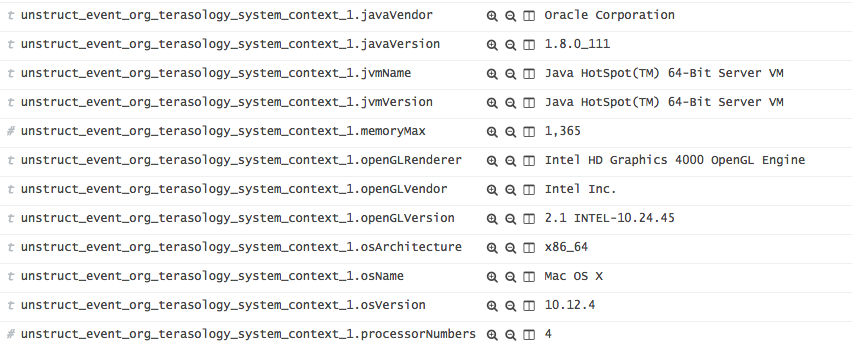
Week 2 (6/June ~ 12/June)
In week 2, following the work of week 1, I implemented the user's authorization. The user's authorization is implemented by adding two config types in `Config.class` instance in game context: `TelemetryConfig` (Enable telemetry or not) and `LaunchPopupConfig` (whether the user wants to see the popup when launching the game). Together with the user authorization, I implemented a `LaunchPopup` which will pop up during game launching, tell user what telemetry does and ask for user's permission. With the help of @Cervate and @skaldarnar, we added a buttom which will link to the `Metrics Menu` (will be implemented in furture). Here is update in PR: update week 2 is the update in PR. The popup looked as follow: 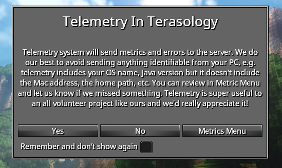
Week 3 (13/June ~ 19/June)
In week 3, I fixed two bugs in the docker server: telemetry#10 and telemetry#11 Quite a few work is done in the Terasology code: A `TelemetrySubSystem` engine system initializes all the telemetry stuffs, and then injects the `emitter` and the `metrics` to game context so that the other classes can use them for telemetry. Similar to the `Config.class`, the `Metrics.class` stores all the metric instance in the environment. It'll be used to show to the users what we tracker. In the future, it'll be used if we want to store some user's statistics in files. E.g. If we want to count the total number of boxes distroyed and we might need to store the number of boxes every time game shuts down. The abstract `Metric.class` is a class to extend for every new `Metric` class. A new `Metric` class should also be annotitated by `@TelemetryCategory`. Every field being tracked should be marked as `@TelemetryField`. The `TelemetryScreen` shows to users the field names and field values that we track. Users can enable and disable the telemetry via the check boxes in the menu. It finds these telemetry metrics automatically by the annotation `@TelemetryCategory`. So if a new metric extends the abstract `metric.class` and all the telemetry fields marked as `@TelemetryField`, their names and values will be showed automatically. Thanks @onitas for reviewing the PR. Here is the update in PR: update week 3, and the `Metrics Menu` looked like this: 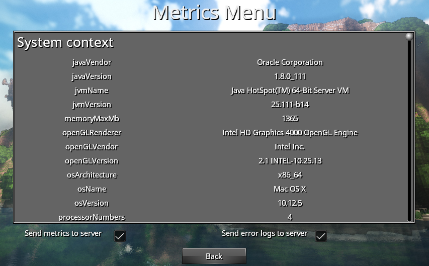
Week 4 (20/June ~ 26/June)
In the week 4, I worked on the error reporting. The error reporting system will enrich the error logs and send them to the server.
A new configuration in the logstash server to descode the json logs: telemetry#13
I used logstash-logback-encoder library. I implemented a `TelemetryLogstashAppender` based on the `LogstashTcpSocketAppender`. It has a `gameContext` field and it could be enabled or disabled via its methods.
Two json providers `SystemContextJsonProvider` and `ModulesJsonprovider` enriches the error logs with system information and module information. Also I added a new metric `ModulesMetric` to track the module information in game.
To turn on/off the error reporting, the user can go to the Metrics Menu and clicks the check box to enable/disable it. It's implemented via a listener on the check box and the filters in the logback appender. Thanks @Cervator for reviewing the code.
Here is the update in the PR: update week4. The error logs received during launching a game looked like this:
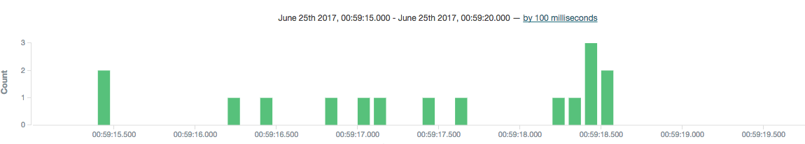
The informations of a log received:
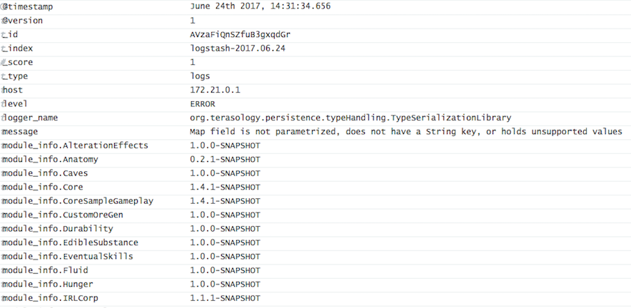
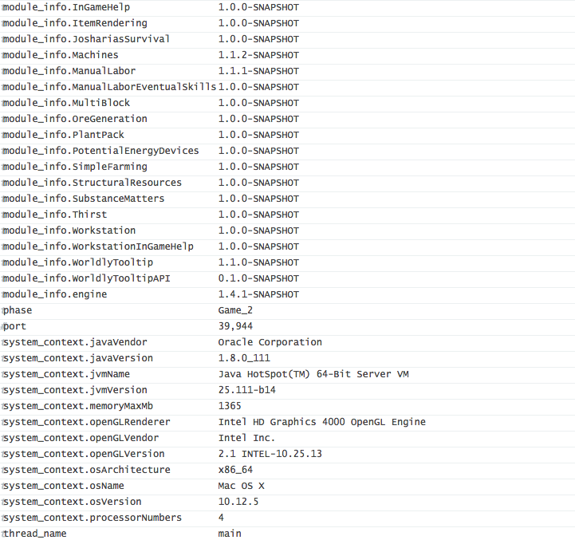
Phrase 2
Week 5 (27/June ~ 4/July)
The PR of the period 1 became large. Mentors helped me review the code and there are several problems. In the week 5 I worked on the PR to help it merged in Terasology. Since the telemetry code is not ready for use. To help it merged, I turned off all the telemetry stuffs including snowplow tracker and error reporting default to `OFF`. There two `checkbox`s in the `Metrics Menu` on which the user can turn on the telemetry. A `ServerPopop` would appear asking for the server infomation such as address, port, etc. Here is the update in PR: update week5. The `ServerPopup` looks as below: 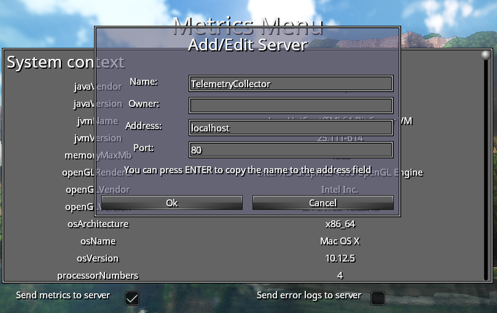
Week 6 (5/July ~ 11/July)
At the beginning of week 6, I fixed an `Tracker unclosed` issue in snowplow-tracker lib which would be adopted by organisation snowplow: snowplow-java-tracker#189. MovingBlocks org provided me with a server for the telemetry. The graphic interface Kibana is available on site: Kibana In week 6, I also started to work on "game play telemetry" which recorded metrics such as block destroyed in game. A first attampt here in first commit was to track player configuration such as network mode, language, player height in game, etc. Then with user's permission, these information will be sent to the telemetry server. 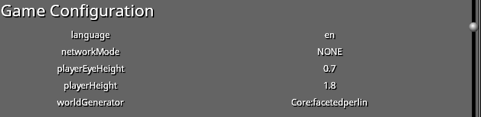
Week 7 (12/July ~ 18/July)
In the week 7, I continued to work on "game play telemetry". The metrics includes blocks destroyed, blocks placed, monsters killed, game configuration, and game play statistics such as distance traveled, play time. These metrics could not only used for telemetry but also used to visualise the game play stats in mefor fun. Since all these game play stats stored in the player entity, it could help to develpe a game play achivement system to all the stats of all the players in a multiplayer game. The PR corresponded is here. And you can see those game play stats show as below: 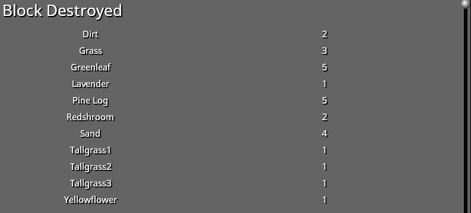 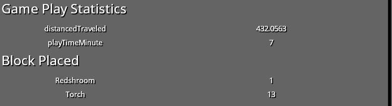
Week 8 (19/July ~ 25/July)
In the week 8, I polished the PR of game playtelemetry to help it merged. There are several issues about telemetryleft. I fixed most of the issues and some bugs such as telemetry not re initialize in a new game. In week 8, together with mentors, we discussed about a user identification functionality. To better understand those stats from telemetry, we thought it would be better to identify the user. We thought including a code which indentify the user in each metric but this code should not have personal information. In final, we chosed a SHA2 hashed string of the MAC address as the user id. One of these commits: 430c4b5.
Phrase 3
Week 9 (25/July ~ 31/July)
In week 9, I started with some improvements in telemetry code in Terasology: PR #3048. I did also some improvements in telemtry server. One of the improvment was to set all string fields in Elasticsearch default to `no analyzed`. By default, the Elasticseach analyze all the string fields. For example, in the dashborad, "Intel HD Graphics 400" will be seperated to "Intel", "HD", "Graphics", "400". It was not very useful for us and it got in the way when we wanted some courbes about the comparision about different string fields. On changing Elasticsearch to `string no analyzed`, we could finally get some nice graphes. You can see this commit here: 9f4e8b4. Below is a sample circle graph about the graphic card info from different users. "headless" means the user is running a handless server and "Disabled Field" means the user doesn't want this field to be sent. 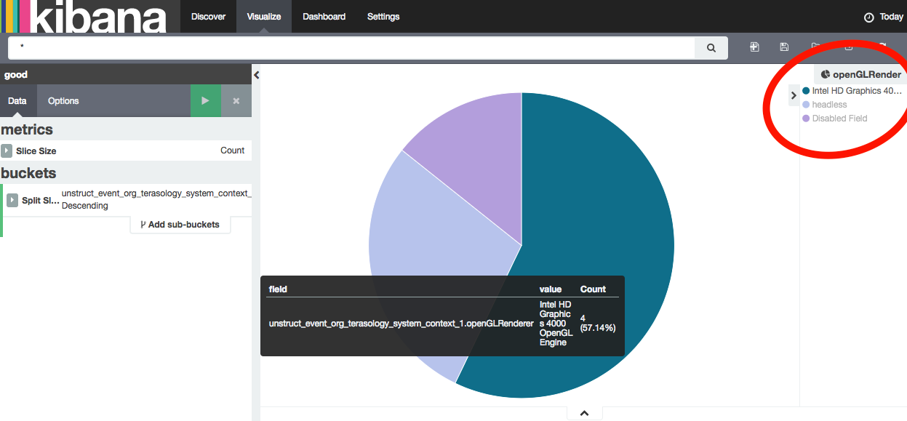
Week 10 (1/August ~ 7/August)
In the week 10, I planed to implement a light feedback reporting functionality based on snowplow tracker. After discussing with mentors, we thought that might not be a good idea because the feedback maybe includes some personal information and it might not be good to show feedbacks in kibana. So I turned to implent "more users' options". The telemetry code had allowed the user to choose wheter send metrics to the server. We wanted some thing suppler: the user could choose which telemetry field to be sent but not the others. What's more, it could be possible for the user to choose which group of metrics to be sent but not the others. For example, the user could choose the game play metric to be sent but not the system info metric. This functionality is implemented by adding check box to each telemetry field in `Metrics Menu`, adding several listeners to these checkboxs and binding these check boxes with map which recorded wether the field was allowed to be sent. The code is here: PR #3056.
Week 11 (8/August ~ 14/August)
In the week 11, I implemented a telemetry API which the other modules could use to track events. Telemetry in other modules should behave the same as telemetry in engine. For example, all the metrics should be added in `Metrics` instance in context and all the fields should be shown in `Metrics Menu`. To acheive this API, I had to rewrite `Metrics.class` to drive open-closed principle: A new metric instance should be added to it automatically. At first I was thinking about forcing all metrics to be added to `Metrics.class` when constructing. Mentors taught me a more beautiful way: using `annotion` to fetch all Metric Classes and use `Constructor.newInstance()` to auto instantiate these classes. The telemetry API was acheved by marking telemetry class `@API`, adding external module to `whitelist` and changing some methods to `AccessController.doPrivileged()`. I learned pretty much about java sandbox model. The new PR and test module are here: PR#3075 and TelemetryApiTest.